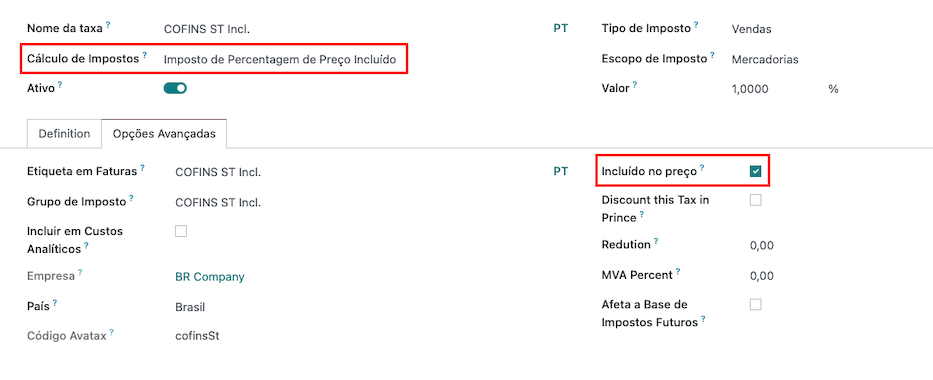

Brasil¶
Introducción¶
Con la localización brasileña puede calcular, en automático, los impuestos de las ventas de bienes con AvaTax (Avalara) a través de llamadas a la API y también puede configurar impuestos para los servicios.
Para calcular los impuestos de bienes debe configurar los contactos, empresa, productos y crear una cuenta en AvaTax desde los ajustes generales de Odoo.
Puede crear y configurar impuestos de servicios directamente desde Odoo sin calcularlos con AvaTax.
La localización también incluye impuestos y una plantilla del plan de cuentas que se puede modificar si es necesario.
Configuración¶
Instalación de módulos¶
Instale los siguientes módulos para obtener todas las funciones de la localización de Brasil:
Nombre |
Nombre técnico |
Descripción |
|---|---|---|
Brasil - Contabilidad |
|
Este es el paquete de localización fiscal predeterminado y agrega características contables para la localización brasileña que representan la configuración mínima necesaria para que una empresa opere en Brasil. La instalación del módulo carga automáticamente el plan de cuentas, impuestos y campos requeridos para configurar correctamente el contacto. |
Brasil - Reportes contables |
|
Agrega un informe de impuestos simple que ayuda a verificar el importe de los impuestos por grupo fiscal en un plazo determinado. También incluye el estado de resultados y el balance de situación adaptados para el mercado brasileño. |
AvaTax Brasil |
|
Agrega el cálculo de impuestos para Brasil mediante AvaTax y todos los campos necesarios para configurar Odoo con el fin de utilizar AvaTax de forma correcta y enviar la información fiscal necesaria para obtener los impuestos correctos. |
AvaTax para órdenes de venta en Brasil |
|
Funciona de la misma forma que el módulo |
Configure su empresa¶
Para configurar la información de su empresa, vaya a la aplicación y busque el nombre de su empresa.
Seleccione la opción Empresa en la parte superior de la página y configure los siguientes campos:
Nombre
Dirección (escriba la ciudad, estado, código postal y país)
Identificación fiscal (CNPJ)
IE (Inscrição estadual, registro estatal)
IM (Inscrição municipal, registro municipal)
Código SUFRAMA (Superintendencia de la Zona Franca de Manaos, agréguelo si es necesario)
Teléfono
Correo electrónico
Configure la información fiscal en la pestaña Ventas y compras:
Agregue la posición fiscal para AvaTax Brasil.
Régimen fiscal (régimen fiscal federal)
Tipo de contribuyente ICMS (indica el régimen de ICMS, el estado de exención o si no es contribuyente)
Sector de actividad principal

Por último, suba el logo de la empresa y guarde el contacto.
Nota
Si se encuentra bajo un régimen simplificado, debe configurar la tasa de ICMS en .
Configurar la integración con AvaTax¶
AvaTax de Avalara es un proveedor de cálculo de impuestos que se puede integrar a Odoo para calcular de forma automática los impuestos teniendo en cuenta la empresa, contacto (cliente), producto e información de la transacción para obtener el impuesto a obtener adecuado.
Odoo es socio certificado de Avalara Brasil, esto significa que los expertos de Avalara revisaron los flujos de trabajo cubiertos por el alcance de la integración.
El uso de esta integración necesita compras dentro de la aplicación (IAP) para calcular los impuestos. Cada vez que se calculan los impuestos, se realiza una llamada API que consume créditos de su saldo de créditos IAP.
Configuración con credenciales¶
Para activar AvaTax en Odoo debe crear una cuenta. Vaya a y, en la sección AvaTax para Brasil, escriba la dirección de correo electrónico que desea usar para iniciar sesión en el portal de AvaTax. Haga clic en Crear cuenta. Este correo electrónico se utiliza como la dirección de correo electrónico del administrador en AvaTax.
Después de crear la cuenta desde Odoo, debe ir al portal de Avalara para configurar su contraseña:
Ingrese al portal de Avalara
Haga clic en Meu primeiro acesso (Acceder por primera vez)
Escriba la dirección de correo electrónico que utilizó en Odoo para crear la cuenta de Avalara/AvaTax y luego haga clic en Solicitar Senha (Solicitar contraseña)
Recibirá un correo electrónico con un token y un enlace para crear su contraseña, haga clic en este último y copie y pegue el token para continuar.
Advertencia
Si desea probar la integración en una base de datos de prueba o un entorno aislado, le recomendamos utilizar una dirección de correo electrónico alternativa, pues no podrá reutilizar la misma dirección de correo electrónico en su base de datos de producción.
Truco
Puede comenzar a usar AvaTax en Odoo sin crear una contraseña y acceder al portal de Avalara. En Odoo, el único requisito para comenzar a usar el motor de cálculo de impuestos de Avalara es crear una cuenta desde la página de ajustes.

Nota
Puede transferir credenciales API. Hágalo solo cuando ya haya creado una cuenta en otra instancia de Odoo y desee volver a utilizarla.
Configurar los datos maestros¶
Plan de cuentas¶
El plan de cuentas se instala de forma predeterminada como parte del conjunto de datos incluido en el módulo de localización. Las cuentas se asignan de forma automática a los impuestos correspondientes y a los campos predeterminados de cuentas por pagar y cuentas por cobrar.
Nota
El plan de cuentas del Brasil toma como referencia el plan de cuentas SPED, que proporciona un punto de partida para las cuentas necesarias en Brasil.
Puede agregar o eliminar cuentas según lo necesite la empresa.
Impuestos¶
Los impuestos se crean en automático cuando instala la localización brasileña. Estos ya están configurados y Avalara utiliza algunos de ellos al calcular los impuestos sobre la orden de venta o la factura.
Puede editar o agregar más impuestos. Por ejemplo, algunos impuestos que se utilizan en los servicios se deben agregar y configurar manualmente, ya que la tasa puede cambiar según la ciudad donde se ofrezca el servicio.
Importante
Los impuestos asociados a los servicios no se calculan con AvaTax, solo los impuestos sobre los bienes.
Al configurar el impuesto que se utiliza en un servicio y está incluido en el precio final (cuando el impuesto no se suma o resta al precio del producto), establezca el cálculo de impuestos como Porcentaje del impuesto de precios incluido y, en la pestaña Opciones avanzadas, marque la casilla con la opción Incluido en el precio.
Para obtener más información sobre cómo configurar impuestos para que se adapten mejor a sus necesidades, consulte la documentación funcional sobre impuestos.
Advertencia
No elimine ningún impuesto, AvaTax los necesita para realizar los cálculos. Si los elimina, Odoo los creará de nuevo cuando se utilicen en una orden de venta o factura y al calcular impuestos con AvaTax, pero debe configurar otra vez la cuenta que se utiliza para registrar el impuesto. Vaya a la pestaña Definición en las secciones de Distribución para facturas y Distribución para reembolsos.
Productos¶
Para utilizar la integración de AvaTax en las órdenes de venta y facturas, primero especifique la siguiente información del producto:
Código CEST: código para los productos sujetos a la sustitución de impuestos ICMS.
Código NCM Mercosur: código de producto de la Nomenclatura común del Mercosur.
Fuente de origen: especifica el origen del producto. Puede ser extranjero o nacional, entre otras opciones posibles, según el caso de uso específico.
Tipo de producto fiscal SPED: tipo de producto fiscal según la lista del Sistema Público de Contabilidad Digital (SPED).
Propósito de uso: especifique el propósito de uso previsto de este producto.

Nota
De forma automática, Odoo crea tres productos que ya están configurados (Flete, Seguro y Otros costos) y se utilizan para los costos de transporte asociados a las ventas. Si necesita crear más, duplique los existentes y utilice la misma configuración. Seleccione Servicio como tipo de producto, en Tipo de costos de transporte seleccione entre Flete, Seguro u Otros costos.
Contactos¶
Antes de utilizar la integración, especifique la siguiente información del contacto:
Información general sobre el contacto:
Seleccione la opción empresa si es un contacto con un número de identificación fiscal (CNPJ) o seleccione individuo si es un contacto con un registro de persona física (Cadastro de Pessoas Físicas).
Nombre
Dirección: el campo código postal es necesario para calcular impuestos de forma adecuada.
CNPJ o CPF: utilice el número de identificación fiscal (CPF) si es una persona física o CNPJ si es una empresa.
IE: número de identificación fiscal estatal.
IM: número de identificación fiscal municipal.
Código SUFRAMA: número de registro SUFRAMA.
Teléfono
Correo electrónico
Nota
Los campos CPF, IE, IM y Código SUFRAMA están ocultos hasta que seleccione
Brasilcomo país.Información fiscal sobre el contacto en la pestaña Ventas y compra:
Posición fiscal: agregue la posición fiscal de AvaTax para calcular de forma automática los impuestos en las órdenes de venta y las facturas.
Régimen fiscal: régimen fiscal federal.
Tipo de contribuyente ICMS: el tipo de contribuyente determina si el contacto está dentro del régimen ICMS, si está exento o si no es contribuyente.
Sector de actividad principal: una lista de los sectores de actividad principal del contacto.
Posiciones fiscales¶
Para calcular los impuestos en las órdenes de venta y facturas, es necesario tener una Posición fiscal con las opciones Detectar de forma automática y Usar la API de AvaTax habilitadas.
Es posible configurar la posición fiscal desde el contacto, también puede seleccionarla al crear una orden de venta o una factura.

Flujos de trabajo¶
Esta sección proporciona una descripción general de las acciones que activan las llamadas a la API para calcular impuestos.
Advertencia
Tenga en cuenta que cada llamada a la API tiene costo. Sea cuidadoso con las acciones que activan las llamadas para tener mejor control sobre los gastos que realiza.
Cálculo de impuestos en cotizaciones y órdenes de venta¶
Activará una llamada a la API para calcular los impuestos de forma automática con AvaTax en una cotización u orden de ventas con cualquiera de las siguientes acciones:
- Al confirmar una cotización
Confirme la cotización de una orden de ventas.
- Al activarla manualmente
Haga clic en Calcular impuestos con AvaTax.
- Al visualizar la vista previa
Haga clic en el botón Vista previa.
- Al enviar un correo con una cotización u orden de venta
Envíe una cotización u orden de venta mediante correo electrónico a un cliente.
- Al acceder a una cotización en línea
Cuando un cliente accede a la cotización en línea (mediante la vista del portal), se activa una llamada a la API.
Cálculo de impuestos en facturas¶
Activará una llamada a la API para calcular los impuestos de forma automática con AvaTax en una factura para el cliente con cualquiera de las siguientes acciones:
- Al activarla manualmente
Haga clic en Calcular impuestos con AvaTax.
- Al visualizar la vista previa
Haga clic en el botón Vista previa.
- Al acceder a una cotización en línea
Cuando un cliente accede a la factura en línea (mediante la vista del portal), se activa una llamada a la API.
Nota
Debe establecer la posición fiscal como Mapeo automático de impuestos (Avalara Brasil) en cualquiera de estas acciones para calcular los impuestos de forma automática.